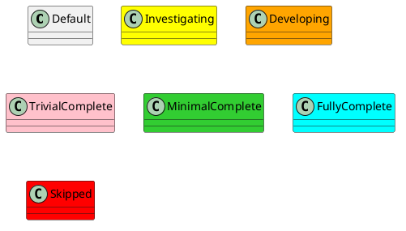

- FAST Robotics - Robot Framework: ROS v2 Middleware
- Architecture
- Setup
- Build
Architecture

Setup
Pre-Requisites:
- Ubuntu system running 24.04 LTS
- Clone this repo using:
git clone --recurse-submodules https://github.com/fastrobotics/robot_framework_ros2.git
cd robot_framework_ros2
git submodule update --remote
- Run the following:
cd <repo>
./scripts/setup_ide.sh
./scripts/setup_robot.sh
Build
To build, run the following:
cd <workspace>
colcon build
To refresh the cmake cache, instead run:
colcon build --cmake-clean-cache